📋 Daftar Isi
Umum
- Cara Login ke Sistem
- Antarmuka Utama (Dashboard & Sidebar)
Mahasiswa
- Dashboard
- Profil Saya
- Hasil Studi — Kartu Hasil Studi (KHS)
- Hasil Studi — Riwayat Studi
- KRS — Pemrograman KRS
- KRS — Kurikulum
- Virtual Absensi (Check-in)
- Jadwal Kuliah
- Keuangan — Tagihan Saya
- Keuangan — Pembayaran
- Skripsi — Ajukan Bimbingan
- Skripsi — Sidang
Dosen
- Dashboard
- Pilih Mata Kuliah
- Jadwal — Rencana Mengajar
- Jadwal — Substitute
- Absensi — Kelola Absensi
- Absensi — Rekap Kehadiran
- Bimbingan — Pengajuan Proposal
- Bimbingan — Mahasiswa Binaan
- Input & Edit Nilai
- Slip Gaji
- Profil Dosen
Admin Akademik
- Dashboard
- Kelola Pengguna (User)
- Master Data — Fakultas & Prodi
- Jadwal Pengajar
- Persetujuan Mata Kuliah Dosen
- Ajuan Proposal Skripsi
- Master Akademik (Ruangan, Prodi, MK)
Admin Keuangan
- Dashboard
- Kelola Tagihan
- Daftar Gaji Dosen
Admin Sistem
- Dashboard
- Kelola Pengguna (User)
- Master Data
- Informasi Penting (Pengumuman)
🔐 Login & Antarmuka Utama
Cara Login ke Sistem
Buka halaman login SIAK di browser Anda. Masukkan NIM (mahasiswa), NIK (dosen), atau email (admin) beserta password Anda.
- Buka halaman login di https://siak-vercel.vercel.app/login
- Masukkan NIM / NIK / Email pada kolom pertama
- Masukkan Password pada kolom kedua
- Klik tombol 「Masuk」
- Anda akan diarahkan ke Dashboard sesuai peran Anda
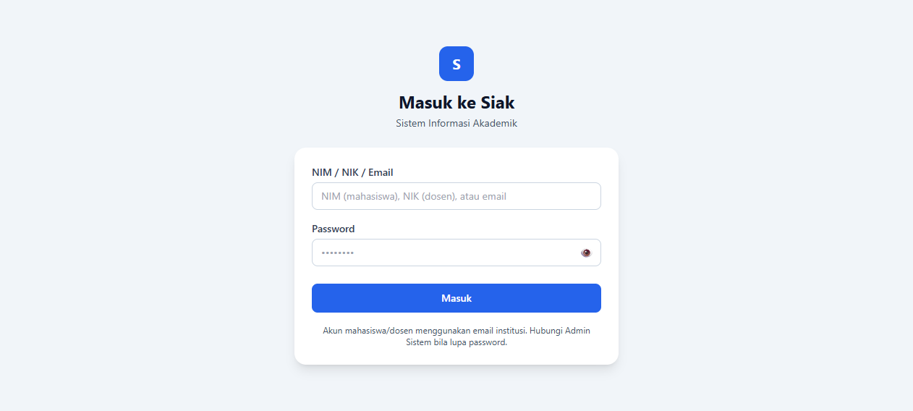
Antarmuka Utama — Sidebar & Dashboard
Setelah login, Anda akan melihat Dashboard sebagai halaman utama. Di sebelah kiri terdapat Sidebar berisi menu navigasi yang berbeda untuk setiap peran.
- Dashboard — Ringkasan informasi dan akses cepat ke fitur utama
- Sidebar — Menu navigasi di sebelah kiri layar
- Profil Pengguna — Ikon profil di pojok kanan atas
| Peran | Menu yang Tersedia |
|---|---|
| Mahasiswa | Profil, Hasil Studi, KRS, Virtual Absensi, Jadwal Kuliah, Keuangan, Skripsi |
| Dosen | Pilih MK, Jadwal, Absensi, Bimbingan, Nilai, Slip Gaji, Profile |
| Admin Akademik | User, Master, Jadwal, Persetujuan MK, Ajuan Proposal, Master Akademik |
| Admin Keuangan | Tagihan, Daftar Gaji |
| Admin Sistem | User, Master, Informasi Penting |
🎓 Panduan Mahasiswa
Dashboard Mahasiswa
Dashboard menampilkan ringkasan informasi akademik mahasiswa, termasuk status KRS, informasi pembayaran, pengumuman terbaru, dan akses cepat ke menu yang sering digunakan.
- Ringkasan status KRS semester aktif
- Informasi pembayaran (lunas/belum lunas)
- Pengumuman terbaru dari admin
- Akses cepat ke fitur utama
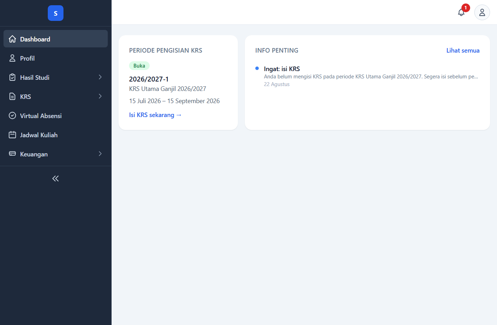
Profil Saya
Halaman profil menampilkan data diri mahasiswa secara lengkap. Anda dapat melihat dan mengunduh E-KTM, serta mengubah informasi kontak (nomor HP, email pribadi, alamat domisili).
- Foto profil dan nama lengkap
- Data akademik: NIM, Program Studi, Fakultas, Angkatan, Jalur Masuk, Status
- Email kampus
- Download E-KTM
- Edit kontak: No. HP, Email Pribadi, Alamat Domisili
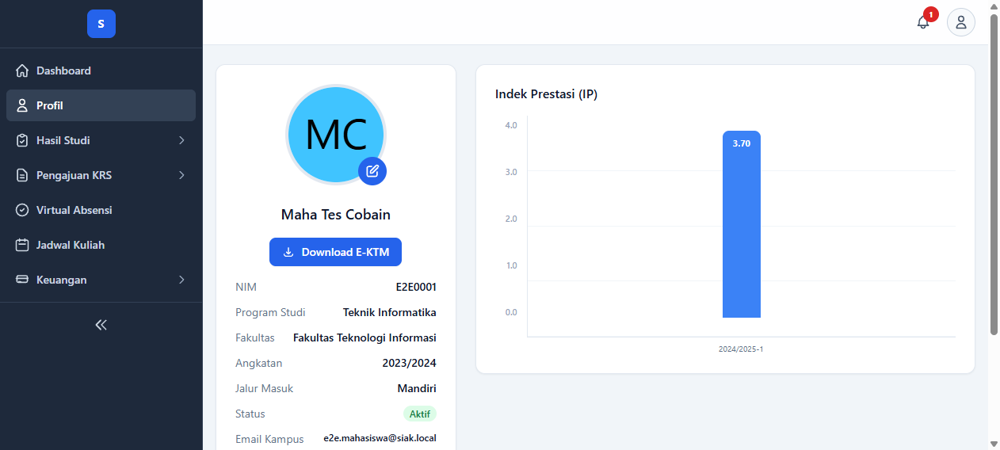
Kartu Hasil Studi (KHS)
KHS menampilkan daftar mata kuliah beserta nilai yang diperoleh pada semester tertentu. Anda dapat melihat transkrip nilai dan mengunduhnya dalam format PDF.
- Daftar mata kuliah per semester
- Nilai huruf dan nilai angka (IP)
- Jumlah SKS semester
- IPS (Indeks Prestasi Semester) dan IPK (Indeks Kumulatif)
- Download transkrip dalam format PDF
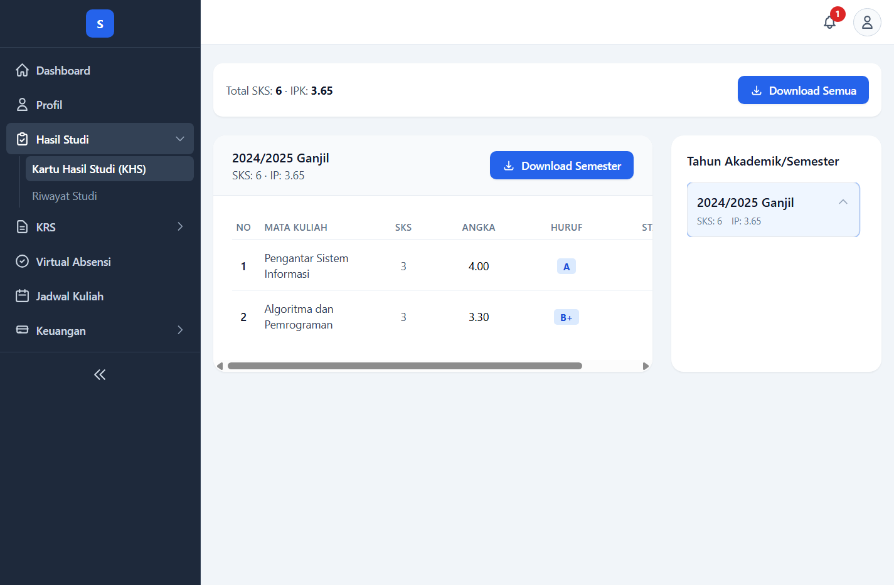
Riwayat Studi
Riwayat Studi menampilkan grafik perkembangan IPS dari semester ke semester, termasuk grafik bar chart IPS per semester dan ringkasan IPK kumulatif.
- Grafik bar chart IPS per semester
- Ringkasan IPK kumulatif
- Total SKS yang telah ditempuh
- Jumlah semester aktif
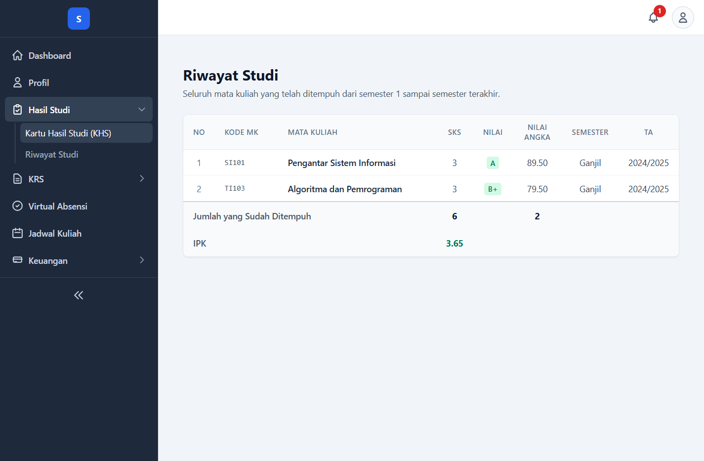
Pemrograman KRS (Kartu Rencana Studi)
KRS digunakan untuk memilih mata kuliah yang akan diambil pada semester depan. Pastikan pembayaran sudah lunas sebelum mengisi KRS.
- Daftar mata kuliah yang tersedia sesuai kurikulum
- Pilihan kelas per mata kuliah
- Informasi kapasitas dan jumlah terisi
- Status KRS: Draft → Submitted → Approved
- Download KRS dalam format PDF
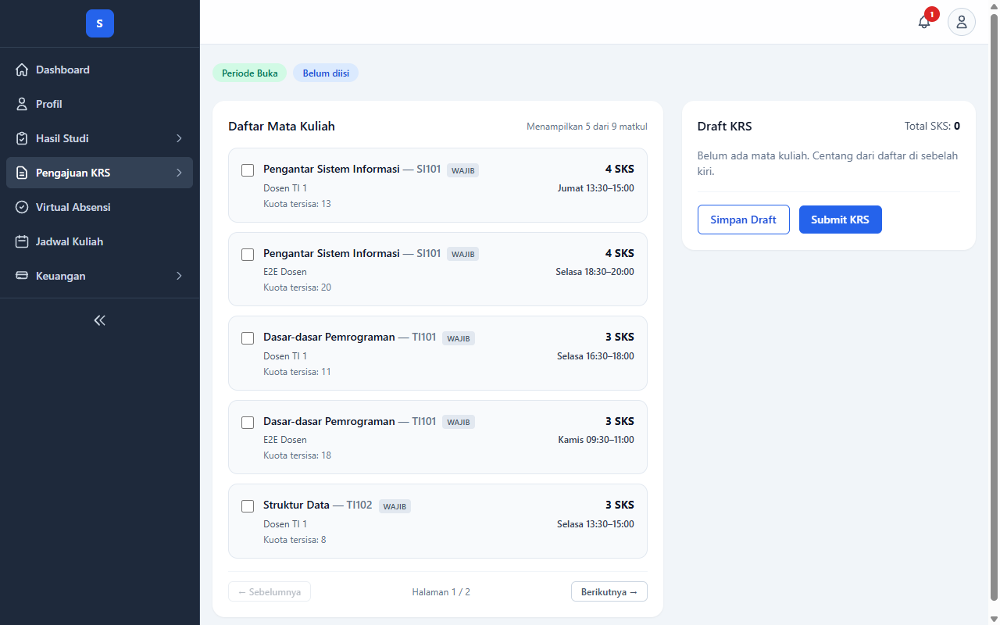
Kurikulum
Halaman Kurikulum menampilkan daftar lengkap semua mata kuliah yang pernah dan akan dikontrak sesuai kurikulum program studi Anda.
- Daftar lengkap mata kuliah kurikulum
- Informasi SKS per mata kuliah
- Status: Sudah Ditempuh / Belum
- Nilai untuk mata kuliah yang sudah ditempuh
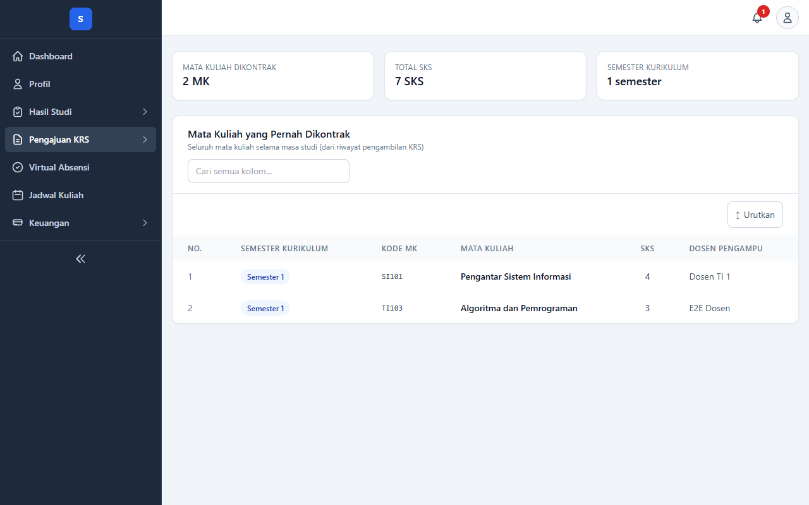
Virtual Absensi (Check-in)
Fitur absensi online untuk mahasiswa. Anda dapat melakukan check-in kehadiran dengan memasukkan ID Sesi atau memindai QR Code yang ditampilkan oleh dosen.
- Buka halaman Virtual Absensi dari sidebar
- Masukkan ID Sesi yang diberikan dosen, atau
- Gunakan QR Code yang ditampilkan dosen di kelas
- Klik Check-in untuk mencatat kehadiran
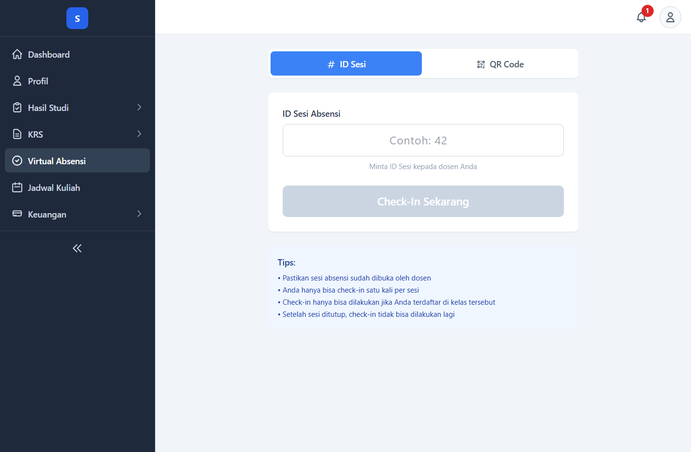
Jadwal Kuliah
Menampilkan jadwal kuliah mingguan untuk semua kelas yang Anda ikuti, lengkap dengan informasi hari, jam, ruangan, dan dosen pengampu.
- Jadwal mingguan: Senin — Sabtu
- Informasi mata kuliah, kelas, dan dosen
- Waktu dan ruangan per kelas
- Status presensi per pertemuan
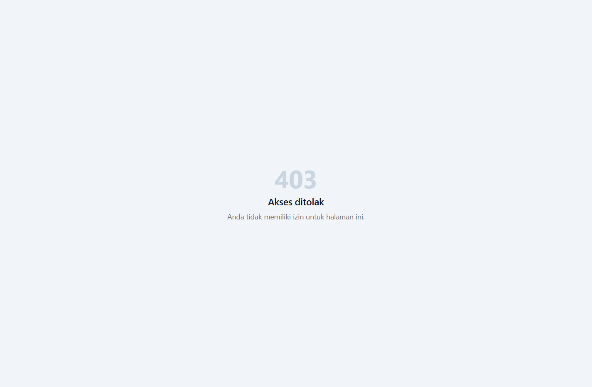
Keuangan — Tagihan Saya
Menampilkan detail tagihan pembayaran kuliah per semester, termasuk jumlah tagihan, status pembayaran, dan tanggal jatuh tempo.
- Detail tagihan per semester
- Jumlah tagihan total
- Status: Lunas / Belum Lunas
- Tanggal jatuh tempo
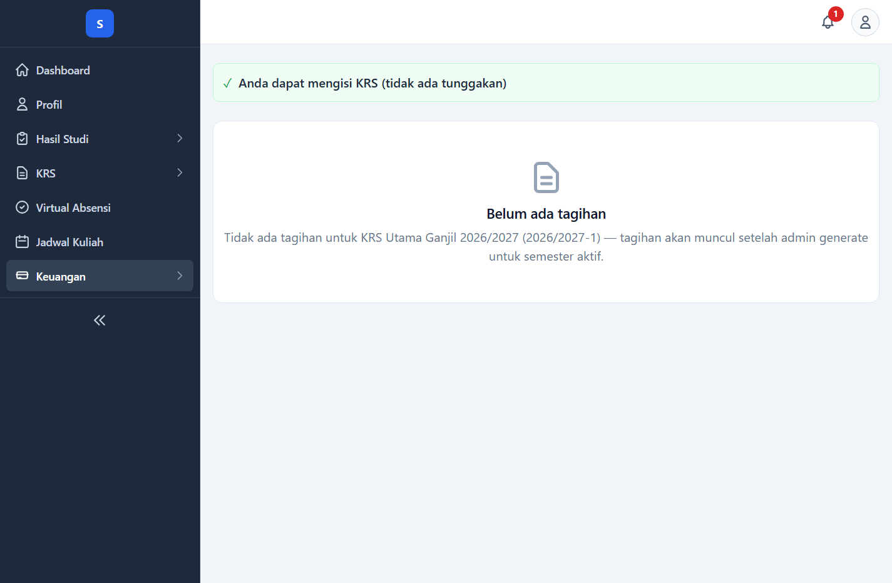
Keuangan — Riwayat Pembayaran
Riwayat pembayaran menampilkan semua transaksi pembayaran yang pernah Anda lakukan, termasuk bukti upload pembayaran.
- Riwayat semua pembayaran
- Status pembayaran per semester
- Bukti upload pembayaran
- Detail jumlah bayar
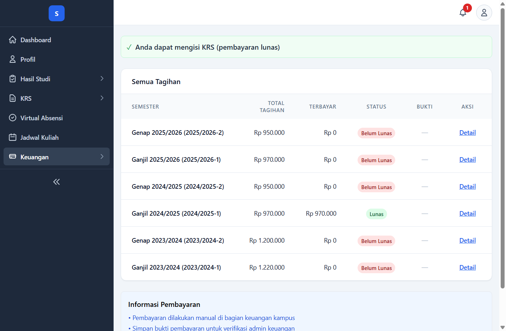
Skripsi — Ajukan Bimbingan
Fitur untuk mengajukan proposal skripsi dan bimbingan. Mahasiswa dapat memilih maksimal 2 dosen pembimbing dan mengupload file proposal.
- Isi judul skripsi
- Pilih dosen pembimbing (maksimal 2 orang) menggunakan fitur pencarian
- Upload file proposal skripsi
- Klik 「Ajukan」 untuk mengirim proposal
- Pantau status: Diajukan → Diterima / Ditolak
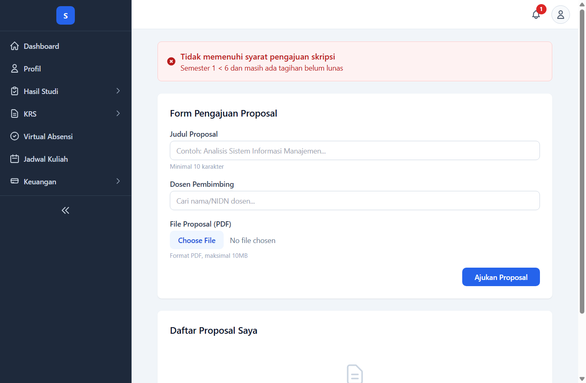
Skripsi — Sidang
Fitur pendaftaran sidang skripsi. Halaman ini tersedia untuk mahasiswa yang status bimbingannya sudah disetujui dan siap untuk sidang.
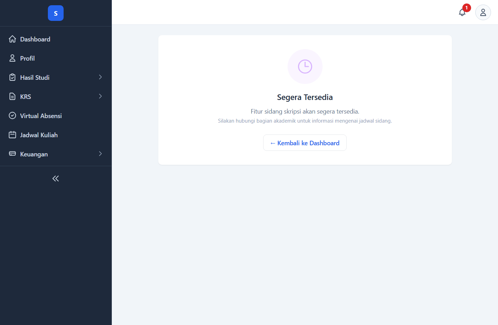
👨🏫 Panduan Dosen
Dashboard Dosen
Dashboard dosen menampilkan ringkasan kelas yang diampu, jumlah mahasiswa, jadwal mengajar hari ini, dan akses cepat ke fitur utama dosen.
- Ringkasan kelas yang diampu
- Jumlah mahasiswa aktif
- Jadwal mengajar hari ini
- Statistik kehadiran
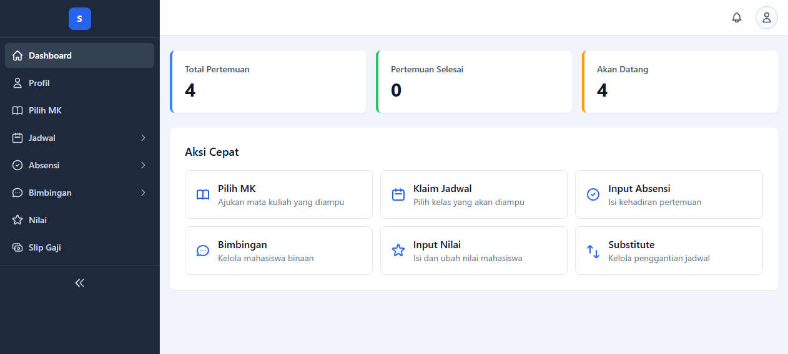
Pilih Mata Kuliah
Halaman untuk memilih mata kuliah yang akan diampu. Dosen dapat melihat daftar mata kuliah yang tersedia berdasarkan program studi dan mengklaim kelas yang diinginkan.
- Filter mata kuliah berdasarkan program studi
- Lihat kapasitas dan jumlah terisi
- Klaim kelas (ambill mengajar)
- Batalkan klaim kelas
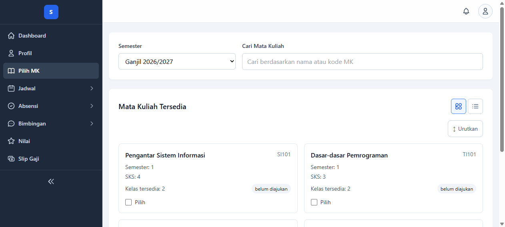
Jadwal — Rencana Mengajar
Menampilkan jadwal mengajar dosen dalam format kalender mingguan. Panel kiri menampilkan daftar kelas, panel kanan menampilkan grid kalender mingguan dengan blok warna untuk setiap kelas.
- Panel Kiri: Daftar kelas dengan indikator status (hijau/merah)
- Panel Kanan: Kalender mingguan (Senin-Sabtu, 07:00-18:00)
- Blok warna pastel untuk setiap mata kuliah
- Informasi ruangan dan jam per kelas
- Status: Draft / Proses / Disetujui
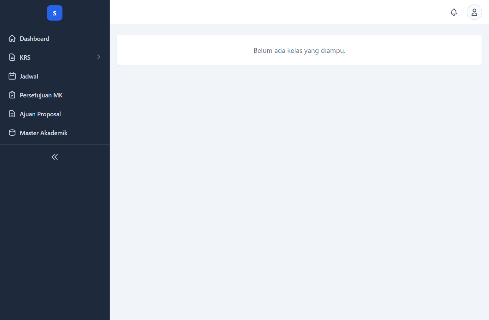
Jadwal — Substitute
Fitur penggantian jadwal mengajar. Dosen dapat mengajukan substitusi ketika tidak bisa mengajar pada jadwal tertentu.
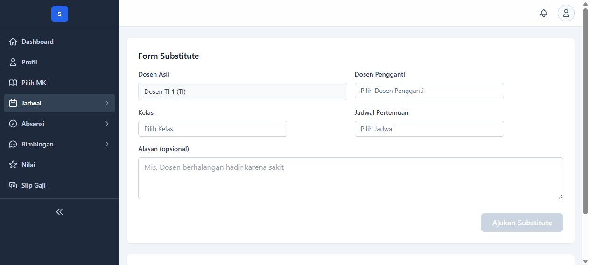
Absensi — Kelola Absensi
Dosen dapat membuat sesi absensi, membuka/menutup sesi, dan mengelola kehadiran mahasiswa per pertemuan.
- Pilih kelas yang akan diabsen
- Buat sesi absensi baru (POST /attendance/sessions)
- Buka sesi agar mahasiswa bisa check-in
- Lihat daftar kehadiran mahasiswa secara real-time
- Update status kehadiran manual jika diperlukan
- Tutup sesi setelah pertemuan selesai

Absensi — Rekap Kehadiran Mahasiswa
Menampilkan persentase kehadiran setiap mahasiswa di setiap kelas yang diampu. Berguna untuk memantau tingkat kehadiran mahasiswa secara keseluruhan.
- Persentase kehadiran per mahasiswa
- Filter per kelas
- Detail jumlah hadir, izin, sakit, tidak hadir
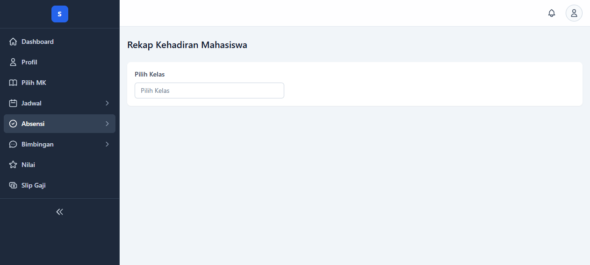
Bimbingan — Pengajuan Proposal
Dosen pembimbing dapat melihat dan mereview proposal skripsi yang diajukan mahasiswa binaan. Dosen dapat menyetujui atau menolak proposal beserta catatan.
- Daftar proposal skripsi yang perlu direview
- Detail proposal: judul, file, status
- Action: Setujui / Tolak dengan catatan
- Riwayat review proposal
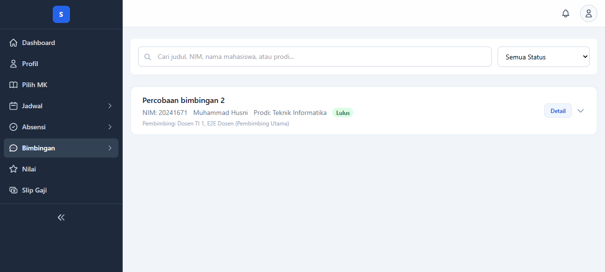
Bimbingan — Mahasiswa Binaan
Daftar mahasiswa yang sedang dalam proses bimbingan (status: dalam_bimbingan, siap_sidang). Dosen dapat mencatat progres bimbingan untuk setiap mahasiswa.
- Daftar mahasiswa aktif dalam bimbingan
- Status: Dalam Bimbingan / Siap Sidang
- Catat bimbingan (tanggal, catatan)
- Lihat riwayat bimbingan
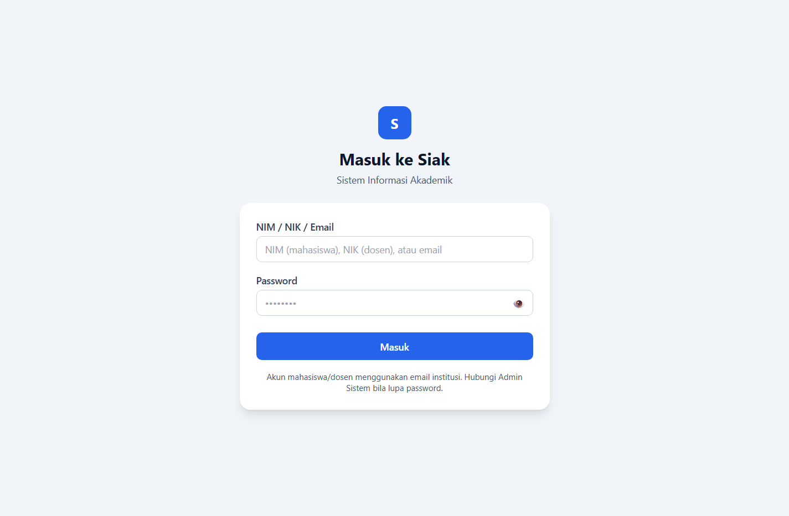
Input & Edit Nilai
Dosen dapat menginput dan mengubah nilai mahasiswa untuk kelas yang diampu. Nilai meliputi tugas, UTS, UAS, dan nilai akhir.
- Input nilai baru (POST /grades)
- Edit nilai yang sudah ada (PUT /grades/:id)
- Komponen nilai: Tugas, UTS, UAS, Final Score
- Nilai huruf dan grade point otomatis
- Atribusi input_by (dosen yang menginput)
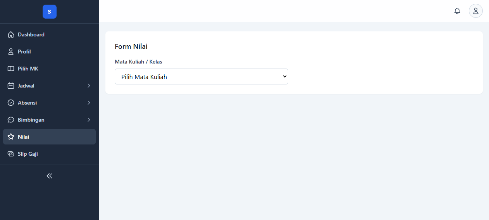
Slip Gaji
Dosen dapat melihat dan mengunduh slip gaji per periode (bulan/tahun). Slip gaji tersedia dalam format PDF.
- Filter slip gaji per bulan dan tahun
- Detail komponen gaji
- Download slip gaji PDF
- Riwayat slip gaji
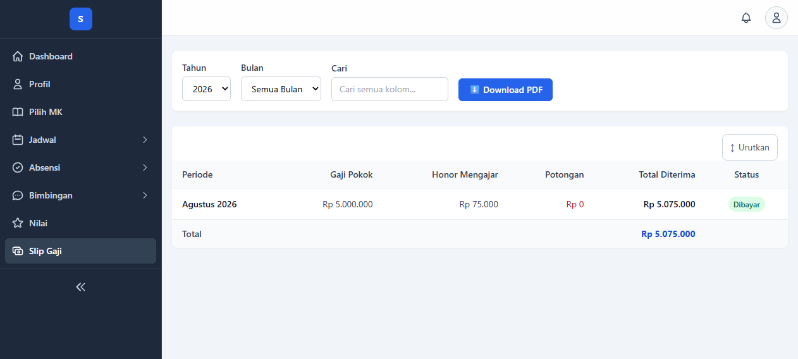
Profil Dosen
Halaman profil dosen menampilkan data diri, foto profil, dan informasi kontak. Dosen dapat mengubah foto profil dan informasi kontak.
- Foto profil dan nama lengkap
- Informasi akademik: NIDN, NIK, Program Studi
- Edit foto profil
- Edit informasi kontak
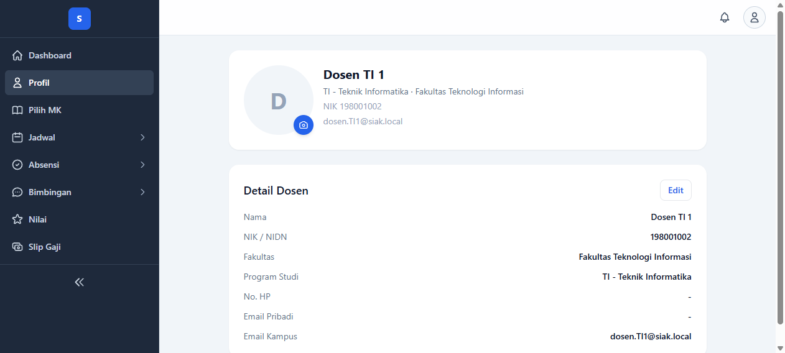
🏛️ Panduan Admin Akademik
Dashboard Admin Akademik
Dashboard admin akademik menampilkan ringkasan data akademik, jumlah mahasiswa aktif, dosen, dan status operasional sistem.
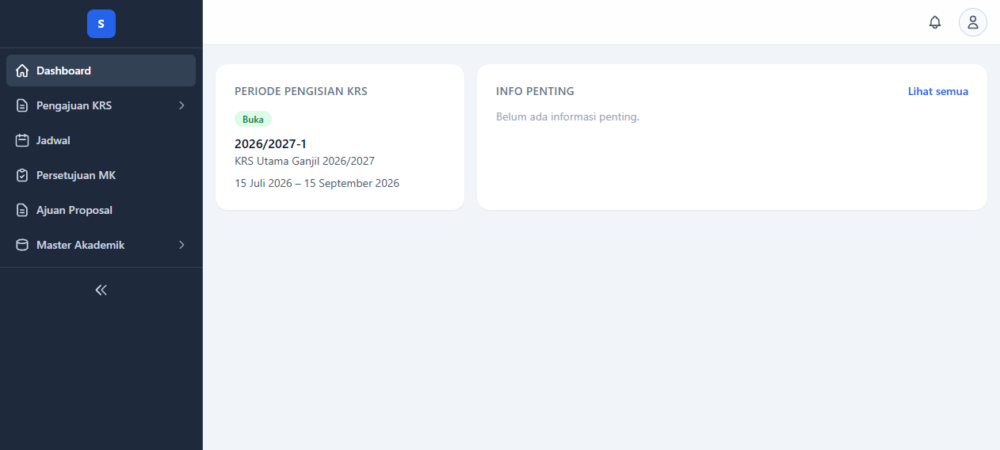
Kelola Pengguna (User)
Kelola data pengguna sistem: mahasiswa, dosen, dan admin lainnya. Admin akademik hanya dapat mengelola pengguna di fakultas yang dikepalainya.
- + Buat User — Tambah pengguna baru
- Cari — Pencarian berdasarkan nama atau email
- Filter — Filter berdasarkan peran (role)
- Ubah Peran — Ganti peran pengguna
- Hapus — Hapus pengguna dari sistem
- Status — Aktif / Non-aktif
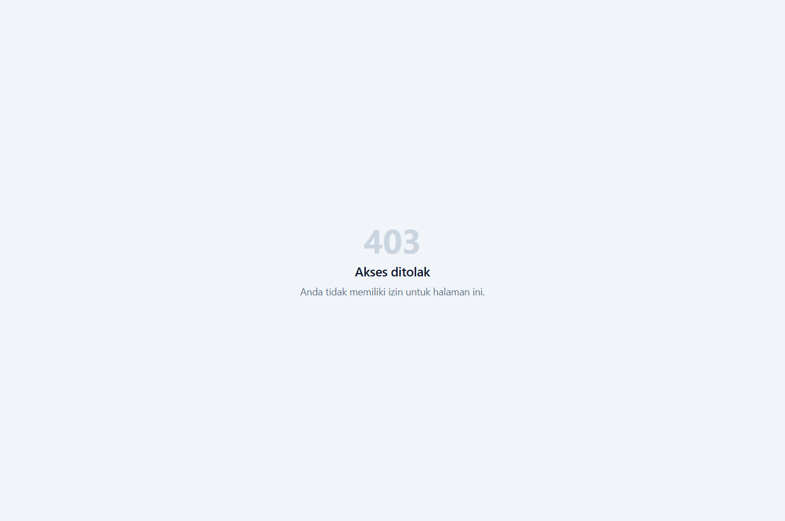
Master Data — Fakultas & Program Studi
Kelola data master fakultas dan program studi. Tersedia dalam format tab terpisah untuk kemudahan navigasi.
- Tab Fakultas: Daftar fakultas dengan CRUD
- Tab Prodi: Daftar program studi per fakultas
- Tambah, edit, hapus data fakultas dan prodi
- Status aktif/non-aktif

Jadwal Pengajar
Kelola jadwal pengajar per kelas. Admin akademik dapat menetapkan dosen pengampu dan mengatur waktu/kota pengajaran.
- Daftar kelas per semester
- Assign dosen ke kelas
- Atur jadwal waktu (hari, jam, ruangan)
- Monitor kapasitas kelas
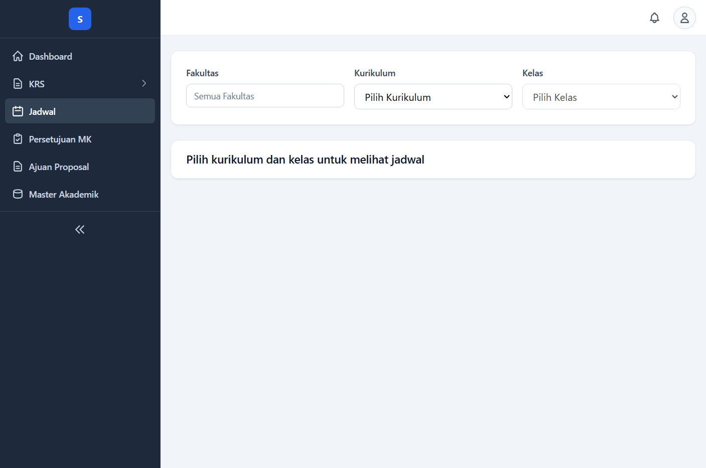
Persetujuan Mata Kuliah Dosen
Review dan setujui/tolak pilihan mata kuliah yang diajukan dosen. Data dikelompokkan berdasarkan dosen dengan status keseluruhan.
- Data dikelompokkan per dosen (1 baris = 1 dosen)
- Filter: Semester, Program Studi, Status
- Detail: Lihat semua MK yang diajukan dosen
- Action: Setujui / Tolak per MK
- Pencatatan reviewer dan waktu review
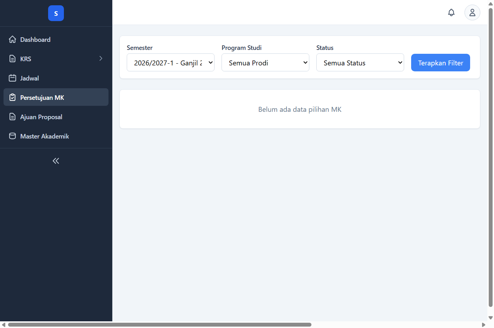
Ajuan Proposal Skripsi
Kelola semua proposal skripsi mahasiswa. Admin akademik dapat melihat, menyetujui, atau menolak proposal yang masuk.
- Daftar semua proposal skripsi
- Filter berdasarkan status
- Detail proposal: judul, mahasiswa, dosen pembimbing
- Action: Setujui / Tolak dengan catatan
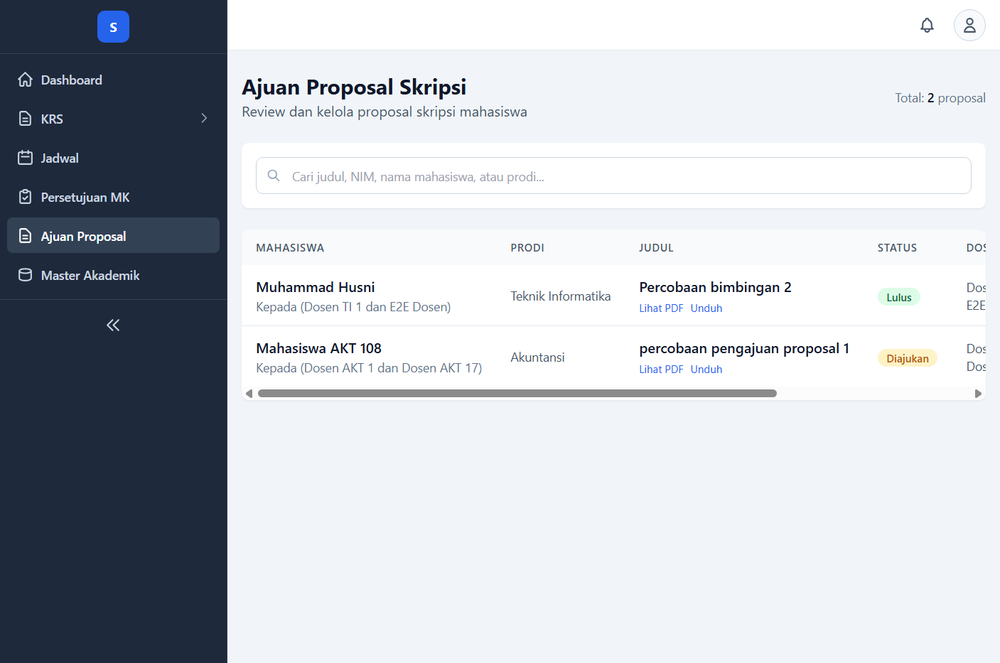
Master Akademik
Kelola data master akademik termasuk Ruangan, Program Studi per Fakultas, dan Mata Kuliah.
- Tab Ruangan: Daftar ruangan kampus
- Tab Prodi per Fakultas: Pemetaan prodi ke fakultas
- Tab Mata Kuliah: Daftar matakuliah global
- CRUD untuk semua master data
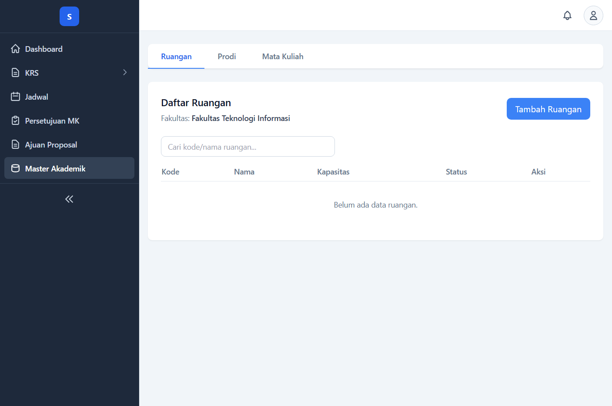
💰 Panduan Admin Keuangan
Dashboard Admin Keuangan
Dashboard admin keuangan menampilkan ringkasan data keuangan, jumlah tagihan aktif, status pembayaran mahasiswa, dan data gaji dosen.
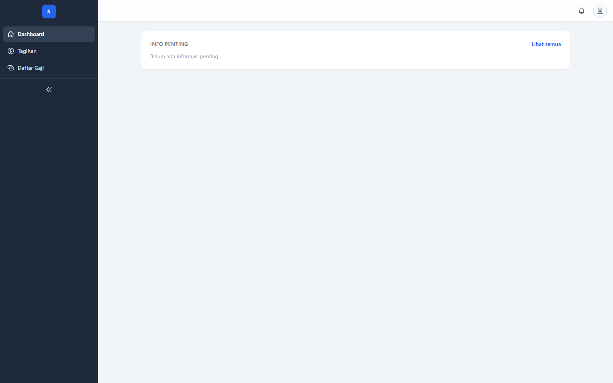
Kelola Tagihan
Kelola tagihan pembayaran mahasiswa. Data ditampilkan terkelompok per NIM (mahasiswa) dengan detail tagihan per semester.
- Data terkelompok berdasarkan NIM
- Generate tagihan baru per semester
- Update status pembayaran (lunas/belum lunas)
- Fitur "Bayar Semua" untuk update batch
- Detail tagihan per mahasiswa per semester
- Upload bukti pembayaran
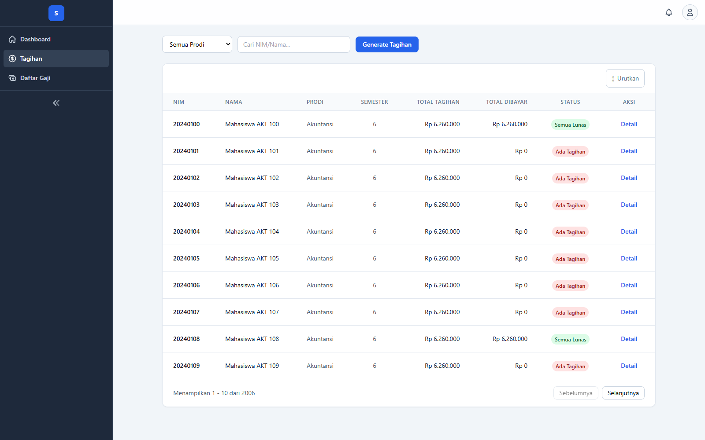
Daftar Gaji Dosen
Generate dan kelola slip gaji dosen. Admin keuangan dapat membuat, menyetujui, dan mencetak slip gaji per periode.
- Generate slip gaji dosen per periode
- Live search dosen
- Sortable columns
- Pagination 10 data per halaman
- Bulk approve (rata kanan)
- Download slip gaji PDF
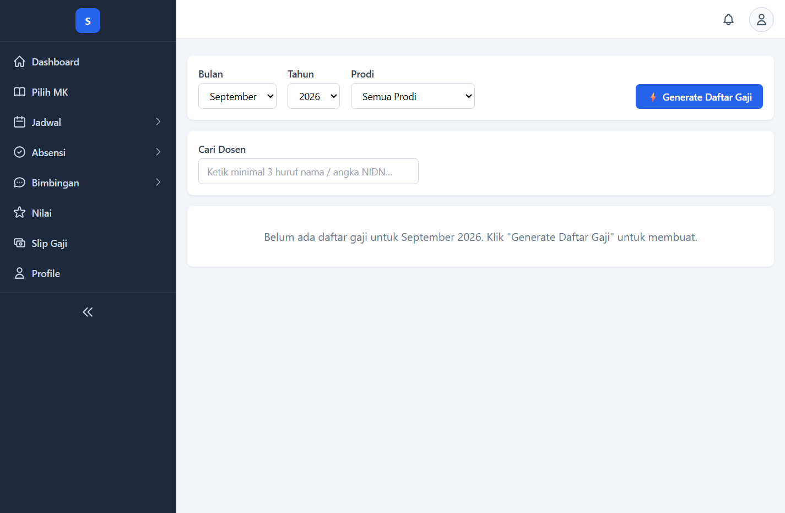
🔧 Panduan Admin Sistem
Dashboard Admin Sistem
Dashboard admin sistem menampilkan ringkasan seluruh data sistem, jumlah pengguna aktif, dan status operasional.
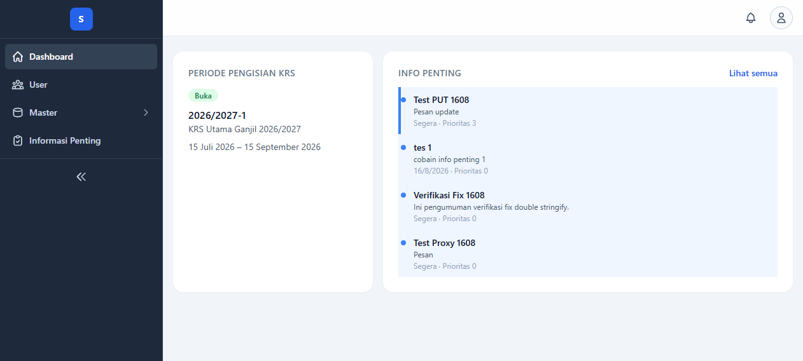
Kelola Pengguna (User)
Kelola semua pengguna sistem tanpa batasan fakultas. Admin sistem memiliki akses penuh untuk CRUD pengguna, mengubah peran, dan mengatur status aktif/non-aktif.
- + Buat User — Tambah pengguna baru dengan peran apapun
- Cari — Pencarian global (tidak dibatasi fakultas)
- Filter — Filter berdasarkan peran
- Ubah Peran — Ganti peran pengguna (termasuk admin)
- Toggle Status — Aktifkan/non-aktifkan pengguna
- Reset Password — Reset password pengguna
- Toggle Wali — Atur status wali dosen
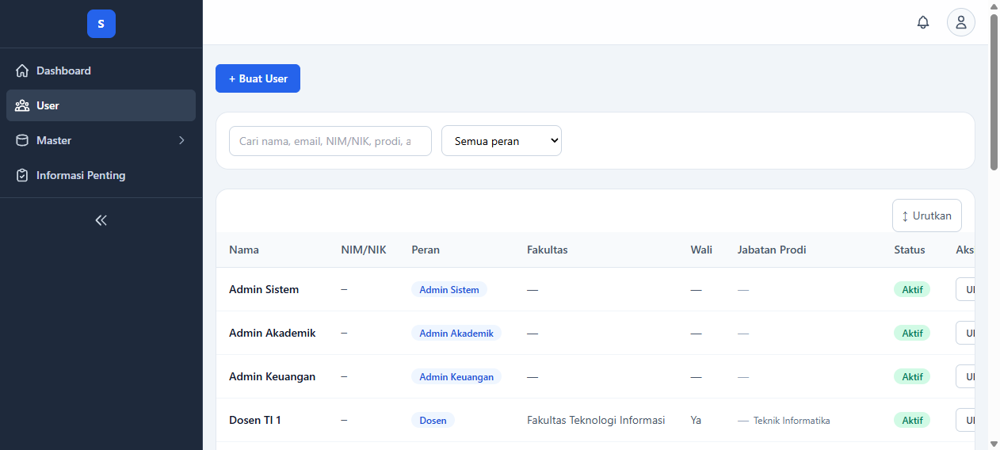
Master Data
Kelola data master fakultas dan program studi. Admin sistem memiliki akses penuh untuk semua data master.
- Kelola semua fakultas
- Kelola semua program studi
- CRUD penuh tanpa batasan
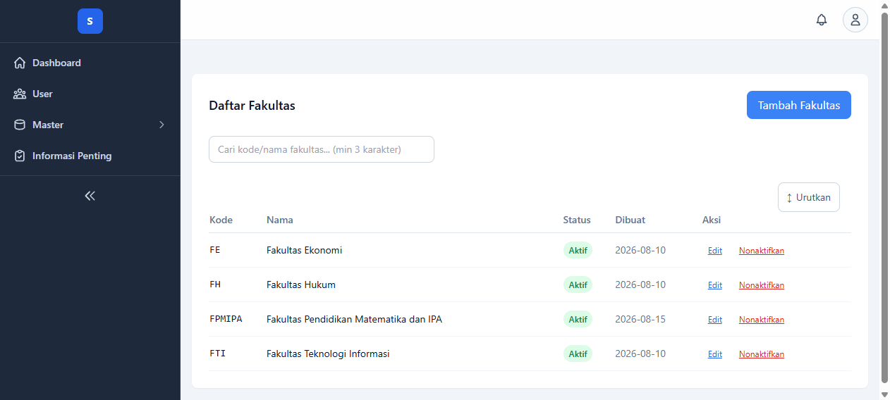
Informasi Penting (Pengumuman)
Kelola pengumuman dan informasi penting untuk mahasiswa dan dosen. Pengumuman akan ditampilkan di dashboard pengguna.
- Buat pengumuman baru
- Edit pengumuman yang sudah ada
- Hapus pengumuman
- Pengumuman ditampilkan di dashboard semua pengguna
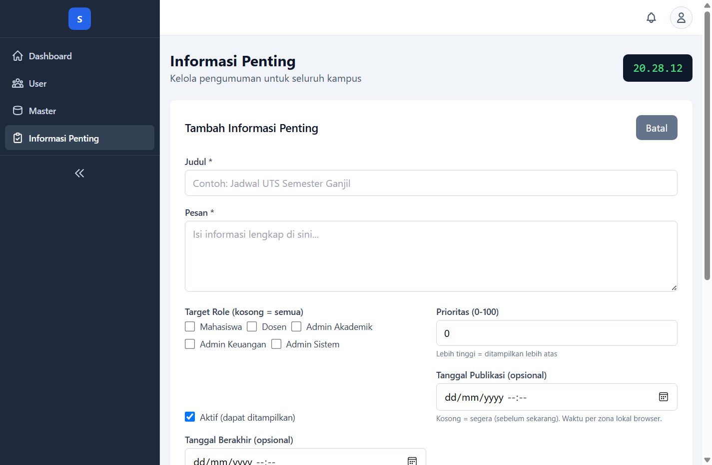
🔐 Matriks Hak Akses (RBAC)
| Fitur / Permission | Mahasiswa | Dosen | Admin Akademik | Admin Keuangan | Admin Sistem |
|---|---|---|---|---|---|
| Profil Saya | ✅ | ✅ | ✅ | ✅ | ✅ |
| Edit Kontak | ✅ | — | — | — | ✅ |
| Transkrip / KHS | ✅ (Sendiri) | ✅ (Sendiri) | ✅ (Semua) | ✅ (Sendiri) | ✅ (Semua) |
| Isi KRS | ✅ | — | — | — | ✅ |
| Approve KRS | — | — | ✅ | — | ✅ |
| Absensi Check-in | ✅ | — | — | — | — |
| Kelola Absensi | — | ✅ | ✅ | — | — |
| Rekap Kehadiran | — | ✅ | — | — | — |
| Input / Edit Nilai | — | ✅ | ✅ | — | ✅ |
| Pilih MK (Dosen) | — | ✅ | ✅ | — | ✅ |
| Jadwal Mengajar | — | ✅ | — | — | ✅ |
| Substitute | — | ✅ | ✅ | — | ✅ |
| Bimbingan (Catatan) | — | ✅ (Wali) | ✅ | — | ✅ |
| Submit Proposal Skripsi | ✅ | — | — | — | — |
| Review Proposal Skripsi | — | ✅ | — | — | — |
| Kelola Proposal (Admin) | — | — | ✅ | — | — |
| Kelola User | — | — | ✅ | — | ✅ |
| Master Fakultas/Prodi | — | — | ✅ | — | ✅ |
| Jadwal Pengajar | — | — | ✅ | — | — |
| Persetujuan MK Dosen | — | — | ✅ | — | — |
| Master Akademik (MK/Ruangan) | — | — | ✅ | — | — |
| Kelola Tagihan | — | — | — | ✅ | ✅ |
| Generate Tagihan | — | — | — | ✅ | ✅ |
| Daftar Gaji (Input) | — | — | — | ✅ | ✅ |
| Slip Gaji (Lihat) | — | ✅ | — | ✅ | ✅ |
| Informasi Penting | — | — | — | — | ✅ |
| Audit Log | — | — | ✅ | ✅ | ✅ |
📚 Daftar Istilah
| Istilah | Keterangan |
|---|---|
| SIAK | Sistem Informasi Akademik — Sistem terpadu untuk pengelolaan data akademik perguruan tinggi |
| KRS | Kartu Rencana Studi — Formulir pemilihan mata kuliah untuk semester depan |
| KHS | Kartu Hasil Studi — Daftar nilai mata kuliah per semester |
| IPS | Indeks Prestasi Semester — Rata-rata nilai semester tertentu |
| IPK | Indeks Prestasi Kumulatif — Rata-rata nilai seluruh semester |
| SKS | Satuan Kredit Semester — Unit ukuran beban studi |
| NIM | Nomor Induk Mahasiswa — Identitas unik mahasiswa |
| NIK | Nomor Induk Kependudukan — Nomor identitas dosen |
| NIDN | Nomor Induk Dosen Nasional — Nomor registrasi dosen nasional |
| Prodi | Program Studi — Jurusan/bidang studi mahasiswa |
| RBAC | Role-Based Access Control — Sistem hak akses berdasarkan peran |
| Wali | Dosen Wali — Dosen yang ditunjuk sebagai pembimbing akademik mahasiswa |
| E-KTM | Kartu Tanda Mahasiswa Elektronik — Kartu identitas digital mahasiswa |
| Substitute | Penggantian jadwal mengajar ketika dosen berhalangan |